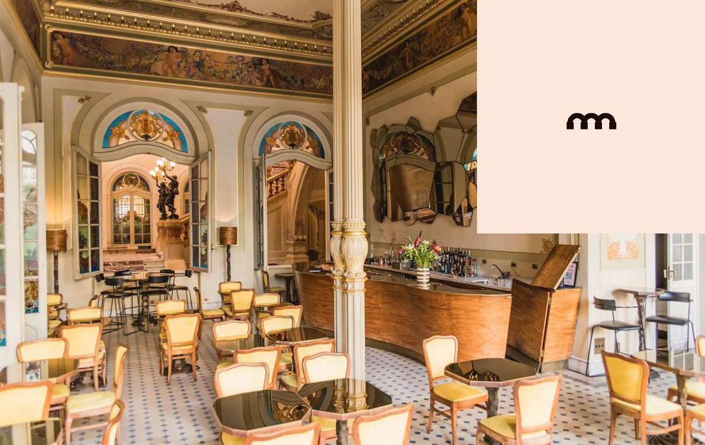

Bares e Restaurantes que você precisa conhecer!
Os mais fora da rota comum experiências gastronômicas incríveis
Theatro Municipal - Bar dos Arcos

Horários de Funcionamento
- 18h - 01h seg a sex
- 18h - 03h sáb
- Fechado - dom
Mais informações
Museu do Ipiranga - Food Park

Horários de Funcionamento
- 12h - 22h ter a quar
- 12h - 23h qui a dom
Mais informações
Casa das Rosas - Caffé Ristoro

Horários de Funcionamento
- 11h - 18h seg
- 11h - 19h ter a sex
- 9h30 - 19h sáb a dom
Mais informações
Antiga Fábrica - Cervejaria Holy Water

Horários de Funcionamento
- 17h - 00h qui a sáb
- 1h - 00h sáb
- 12h - 18h dom
- Fechado - ter e qua
Mais informações
Paranapiacaba - Bistrô Flor do Cambuci
Horários de Funcionamento
- 9h - 19h sex a dom
- Fechado - ter a qui
Mais informações
Parque Ibirapuera - Restaurante Prêt no MAM

Horários de Funcionamento
- 10h - 18h ter a dom
- Fechado - segunda
Mais informações
Voltar ao Topo da Página